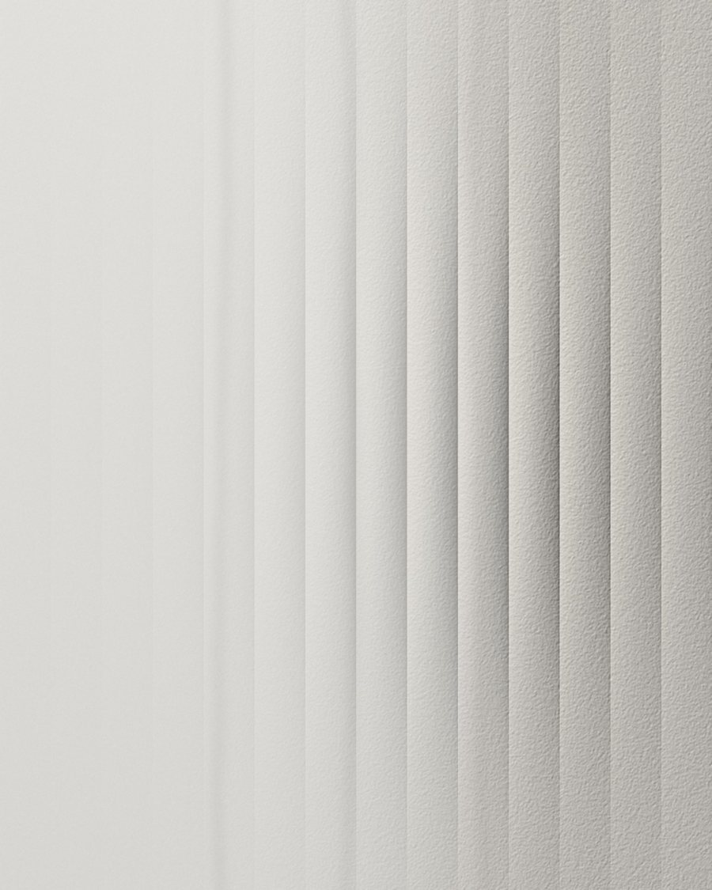
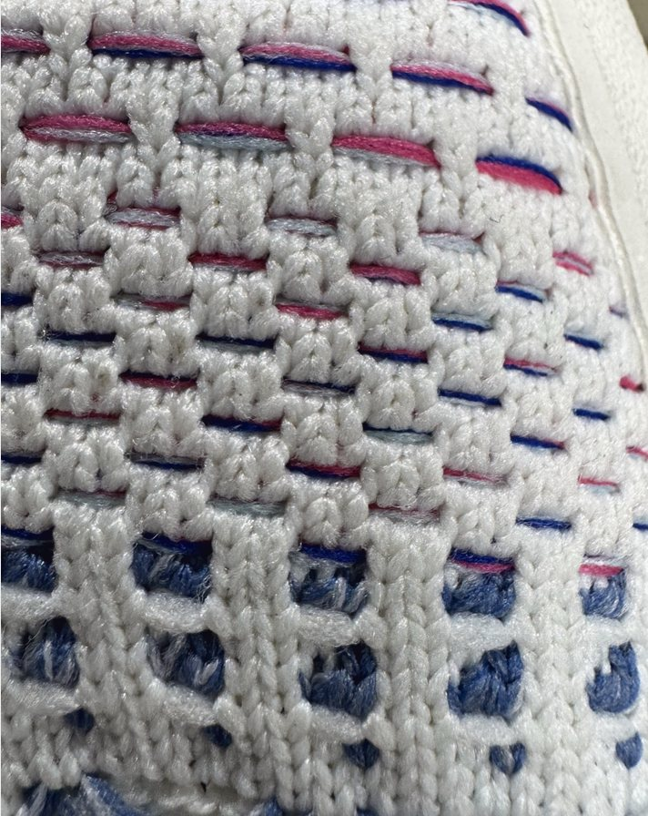
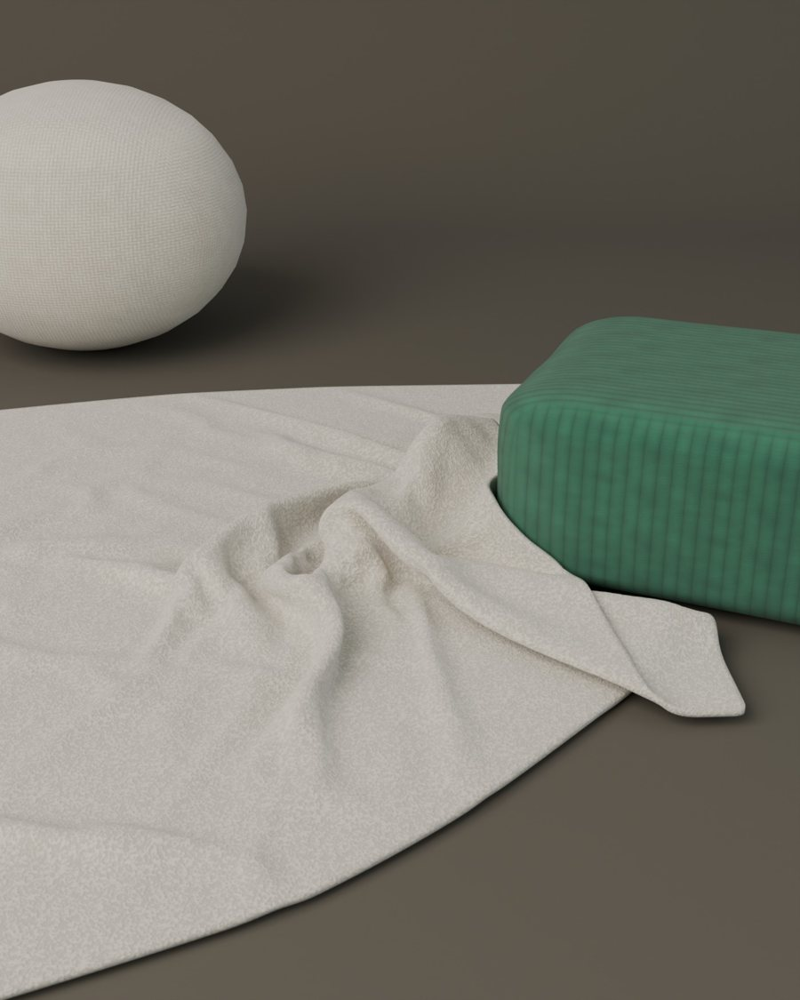
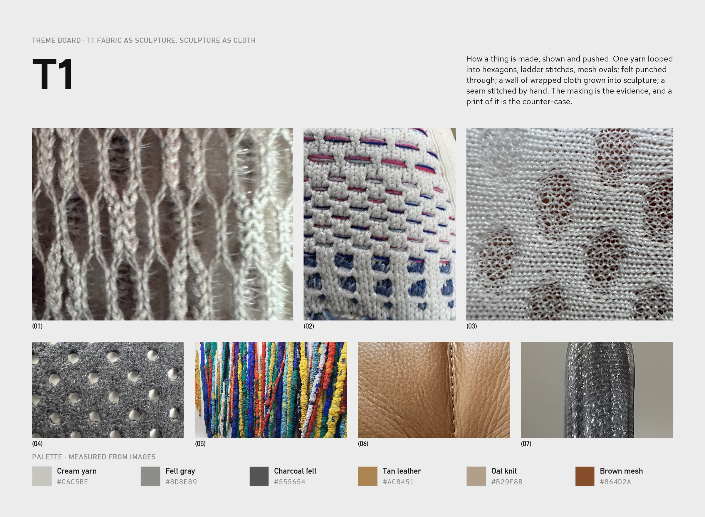

Fabric structure and structural surface
Layers cover; structure remains.



Abstract
What remains of a structure once its surface covers it, and what can texture say that a silhouette cannot? An object is built from layers, planes and vertices; when layers cover a large area they flatten depth and read as a veil, yet the structure underneath is still there. Semper called such a covering a dressing, and the interplay of layers recalls life itself, event after event, one thing hiding another, each layer that disappears holding a truth of its own. Today this is everywhere, in buildings and in everyday products: the surface is a finish, smooth and sealed, with the construction hidden. The monument goes furthest. Like a monolith, it refuses a close reading of its surface, as though detail would bring it down from the sacred to the worldly. Eva Hesse worked against this. She set aside volume, mass and verticality for rope, latex and cheesecloth, and wrote of one of her last works, “really letting it go as it will.” Life is in texture, not in outline and silhouette. This theme follows her: it lets texture and construction show through the surface, frees every detail, and lets the work repeat and expand as it will.
Impact: Direction
There is a fine line between excitement for technology and fear of the black box. Surface is read the same way. When a familiar structure is undetectable, a problem can seem solved, yet it can also raise a worry: where are they hiding it? Often it is not hidden but simply absent. A weave pattern may be embossed, and that is dishonest when it reads as imitation instead of letting pattern and texture do what they are good for. Latex has its own quality of light and a character no other material shares, and it never replaces the depth of genuine leather. People are tired of slick glass on hand-held devices that hides complex internal structure, yet that is also the attraction: we prefer not to see all the complexity that makes it what it is. When is complex texture a pleasure, and when is it an annoyance? There must be a way to tell. / The answer depends on the situation. Near a car windshield a surface must not distract the driver, so it stays quiet. Wet is cold and dry is warm, so the right material and texture belong to the right situation. Color is situational too. In the desert many things are white to reflect heat, and because they blend together, every other color stands apart even more. In a temperate climate there are more hues at lower contrast, tonal and varied. A surgeon's robe is green so that blood is easier to see. No color works in every situation.
Overall mood
How a thing is made, shown and pushed. One yarn looped into hexagons, ladder stitches and mesh ovals; felt punched through; a wall of wrapped fiber grown into sculpture; a seam stitched by hand. Close, tactile, evenly lit. The making is the evidence; a print of it is the counter-case.


Definition and test
T1 is about how a thing is made and how far the making is pushed, not only about cloth.
- Test
- Can you see how it was made, and was the making pushed past the usual method?
- Limit
- A photo cannot show intention or how far a method was pushed past the norm. It shows the method on the surface. "Pushed" is judged here from what is visible (open-work, punching, scale), and stays an interpretation.
Motifs
| # | Motif | Theory sentence it comes from | Images |
|---|---|---|---|
| 01 | One method, many executions: loops, ladder stitches, mesh ovals | "variations in material execution" | (01), (02), (03) |
| 02 | Fabrication pushed past the usual: punched felt, wrapped fiber grown into sculpture | "unconventional fabrication"; "fabric as sculpture" (title) | (04), (05) |
| 03 | The hand visible in the join: a seam stitched and creased | "challenging craftsmanship" | (06) |
| CC | Counter-case: a surface printed to look like a construction | Test, second half: nothing in the object was made that way | (07) |
Weak motifs. Motif 03 has one image and an ordinary one: a leather seam is craft, but it is not visibly pushed. Motif 02 leans on one image (05) for the sculpture half; "sculpture as cloth" (the other half of the title) has no image yet.
Against
Image (07) is the case: viscose jersey printed with a sequin gown, the appearance without the making.
Color direction
The theme gives no color direction: the definition is about method, not hue. The palette below is measured from images (k-means in CIE Lab, six images (01) to (06), as cropped and ungraded; counter-case (07) excluded so its gray backdrop does not enter). It is the palette of this selection, not a rule for the theme. Textile and CMF colors are not added to the master color book from this.
| HEX | Name |
|---|---|
#C6C5BE |
Cream yarn |
#8D8E89 |
Felt gray |
#555654 |
Charcoal felt |
#AC8451 |
Tan leather |
#B29F8B |
Oat knit |
#864D2A |
Brown mesh |
Note: the saturated multicolor of (05) does not reach the six; neutrals dominate because the knits and felt carry most pixels.